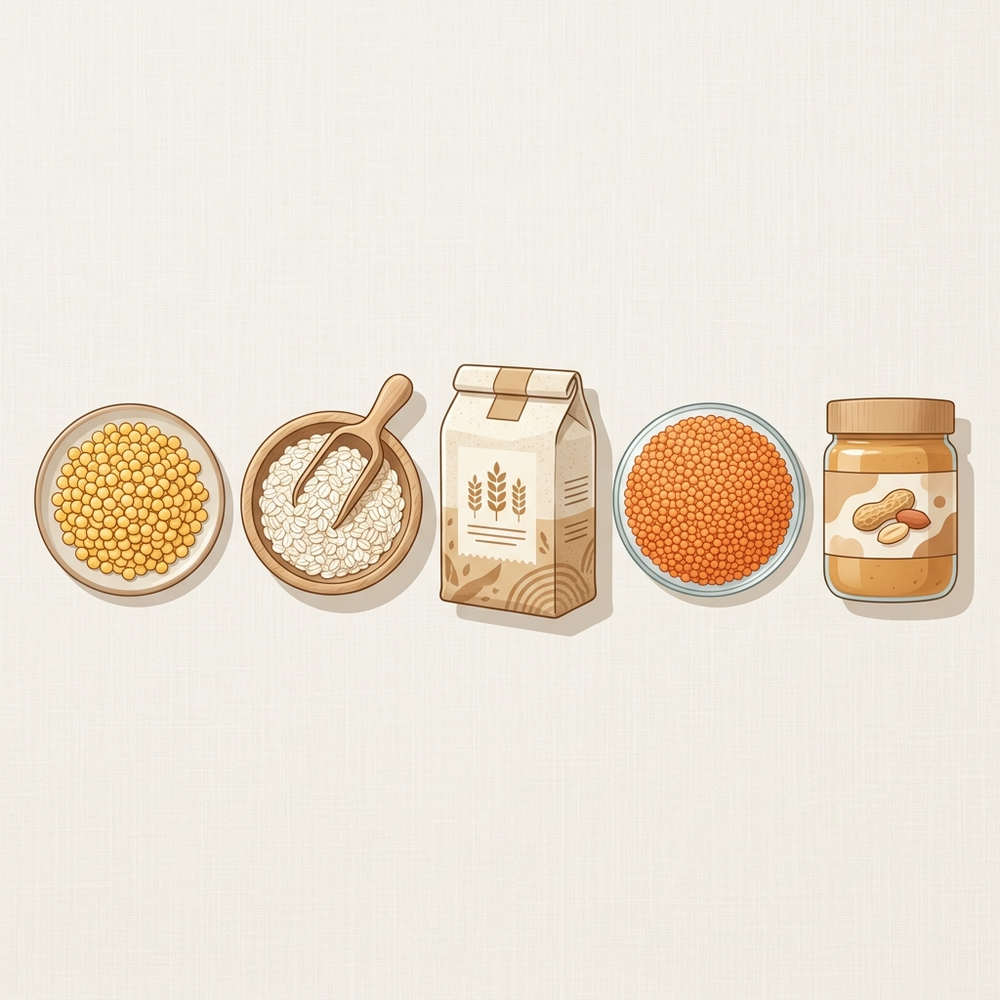

Studentpaketet: Maxat protein för under 200 kr i veckan (CSN-Budget)

Att bygga muskler eller hålla formen som student i Sverige kan kännas som en ekonomisk omöjlighet. Med stigande matpriser försvinner CSN-bidraget snabbt. Men sanningen är att du inte behöver leva på dyrt vassleprotein eller oxfilé för att nå dina proteinmål. Allt handlar om att maximera din PPK (Protein Per Krona).
De 5 billigaste proteinkällorna för studenter
Genom att analysera över 10 000 produkter från Willys och Hemköp har vi skräddarsytt den ultimata shoppinglistan för dig på budget. Här är basvarorna som ger dig absolut mest protein för varje spenderad krona:
- Gula ärter: En total superfavorit med ett PPK-värde på över 12g protein per krona. Billigt, extremt proteinrikt och håller i evigheter.
- Vetemjöl: Överraskande för många, men vetemjöl har runt 10g protein per 100g och kostar extremt lite, vilket ger ett PPK på över 13g/kr. Perfekt för proteinpannkakor.
- Havregryn: Träningsvärldens bästa kolhydratkälla råkar också vara en av de billigaste proteinkällorna.
- Röda och gröna linser: Kräver ingen blötläggning och laddar din tallrik med både protein och komplexa fibrer.
- Jordnötter: Kaloritetigt, men fantastiskt bra PPK för dig som behöver billiga proteiner och extra energi.
Exempel på kostnadseffektiva basvaror
Nedan visas ett urval av typiska basvaror i Sverige som uppfyller kriterierna för Studentpaketet och ger överlägset mycket protein per spenderad krona:
| Produkt | Butik | PPK (g protein/kr) |
|---|---|---|
| Vetemjöl (Garant, 5kg) | Willys | 13.24 |
| Gula Ärter (Gogreen, 1kg) | Willys | 12.30 |
| Havregryn (Axfood, 1.5kg) | Willys | 9.80 |
Så här handlar du för under 200 kr i veckan
Genom att kombinera dessa fem basvaror med strategiska inköp av billig fryst kyckling eller ägg när det är på extrapris, kan du enkelt landa på över 120g protein om dagen för under tvåhundra kronor i veckan. Använd vår kalkylator här på proteinpriser.se för att hitta exakt vilken butik i ditt område som är billigast just idag.
Redo att börja spara? Aktivera Studentpaketet-filtret i kalkylatorn för att se dagens lägsta priser i realtid!
Visa Studentpaketet i kalkylatorn →